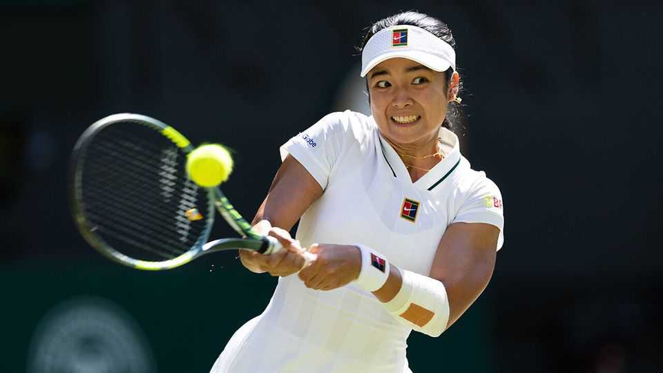

The Philippines is going wild for its home-grown star, Alex Eala
Can one player turn a country into a tennis force?

Aug 27th 2026
At odds of around 5%, Alexandra Eala is far from the favourite for the US Open, the final tennis grand slam of the year, which begins in New York on August 30th. But in the competition for attention, she is the front-runner. In the build-up to the tournament, Nike released shirts emblazoned with names of the world’s top players, including Aryna Sabalenka and Jannik Sinner (the highest ranked female and male players). But it was Ms Eala’s shirt that sold out in hours, thanks to her legions of fans around the world.
Ms Eala is an ace. At Wimbledon, the most prestigious grand slam, she beat Iga Swiatek, the defending champion, in the third round. A few weeks later she won her first big tournament in Washington. She has earned a reputation for agility, cunning play from the baseline and strong return of serves; her left-handed game creates awkward angles for her right-handed opponents. Yet Ms Eala’s exploits on the court explain only part of the hype.
The rest has to do with where she comes from. She is a proud Filipina and, in a country starved of world-class sporting talent, she is already a national hero. In 2025 Ms Eala became the first player from the Philippines to enter the world’s top 100. This month she broke into the top 20.
“Eala-mania” is evident at her matches, which have become boisterous affairs. Demand for tickets at the Canadian Open forced an early-round match featuring Ms Eala to be moved from a 2,800-seat outside court to the marquee, 12,500-seat venue. (Toronto is home to a large number of Filipinos.) In Washington more than 80% of ticket inquiries concerned Ms Eala. Some tennis traditionalists may sniff at the flag-waving fans, but tournament organisers are delighted by them.
Back in the Philippines, all the zeal has given the grassroots game a bounce. Tennis clubs and coaches report rising interest from children, which they are struggling to accommodate because the courts are booked out. Ferdinand Marcos, the country’s president, has called Ms Eala a “true inspiration”. In a state-of-the-nation address in July, Mr Marcos said his administration had tripled its funding for sport, seemingly in response to the surge of enthusiasm for tennis.
Mr Marcos and other Filipinos hope Ms Eala’s emergence could eventually turn their country into a tennis force. That would be good news not just for the Philippines, but for the sport more broadly. Tennis is enjoyed almost everywhere. Its governing body estimates that more than 100m people play it recreationally, of whom a third are in Asia. Yet its elite players come from a shallow pool of countries. In 2025, 88% of the women’s year-end top 50 came from Europe and North America—roughly the same share as in 1990.
Can a single world-class player change a country’s tennis fortunes? Fans have plenty of anecdotes. Bjorn Borg’s dominance in the 1970s, for example, set off a tennis craze in Sweden, which produced top talent in the next generation. The emergence of the Czech Republic as a tennis powerhouse is often attributed to Martina Navratilova, the all-conquering champion of the 1980s.

To see whether this reflects a broader pattern, The Economist examined year-end rankings going back nearly half a century. We identified the year each country produced its first truly elite player—defined as someone ranked in the top 20—and looked at whether more highly ranked players from the same country appeared afterwards. For women, they usually did. Of 32 countries whose first top-20 woman emerged between 1983 and 2020, 28 subsequently fielded more top-50 players. On average, their representation roughly tripled, from about 0.5 players in the top 50 in the five years before the breakthrough to nearly 1.5 in the five afterwards. (The pattern was less pronounced for men. Among 22 pioneer countries, top-50 representation rose from 0.4 players to 1.)
The patterns may be correlational, but other evidence suggests that trailblazers matter. Studies find that stars are especially encouraging to girls, because they make achievement seem attainable. In one Canadian study of teenage female athletes, more than half said there were too few role models in sport; 60% said they would be more likely to persist with a sport if there were more female exemplars.
Yet trailblazers can do only so much. A new paper analysing player rankings from 2000 to 2024 finds that countries with more tennis players and courts tend to produce more top pros. A deep “tennis culture”—captured by factors such as hosting international tournaments—is associated with better results, especially for women.
Ms Eala illustrates the challenge. Growing up, she sometimes practised on courts that doubled as basketball ones; at 13 she left home to train in Spain on a scholarship. She may inspire thousands of Filipino children to pick up a racket, but turning enthusiasm into champions will depend on more prosaic things such as facilities, investment and infrastructure. One star can start a rally. Building a tennis powerhouse is a longer game. ■